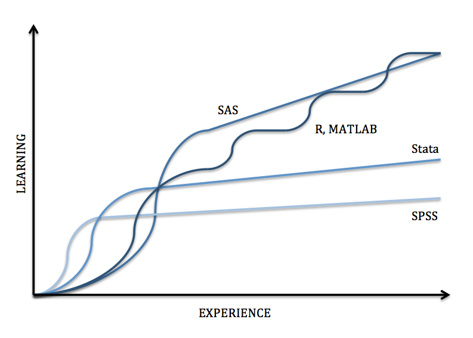

Free and Open Source Digital Tools
Vicky Steeves & Nicholas Wolf | April 8, 2017

Open Source Research Software: Benefits
1. Cost
- Yes, open source is about transforming certain types of expenses (e.g. license fees) into other types (e.g. salaried/volunteer labor; maintenance costs)
- Yes, sometimes open source can be more expensive overall once maintenance and personnel are factored in...
...though see Wong and Sayo (2003), Russo et al. (2005), Dehinbo & Dehinbo (2013) noting that proprietary software still often outstrips open source in costs
Open Source Research Software: Benefits
1. Cost
- BUT...Remember that we are talking about research software used by researchers and their community, not enterprise-level services (most of the current studies only look at open source enterprise-level software)
- Thus, the line between doing research and building software is blurred...so to a greater degree the (research) labor also covers development cost
Open Source Research Software: Benefits
We pause to mention:

Open Source Research Software: Benefits
2. Technology
- Open source development depends on a collaborative community dedicated to uncovering knowledge. That aligns, as Dehinbo & Dehinbo note, with the values of the university
- Most importantly, open source community of researchers have responsibility for maintenance, requiring an ongoing push against obsolescence and closed code bases
Barriers to Adoption
- Most researchers want to focus on analysis, and they want it done now (right now) with the closest masterable tool at hand
- University IT, university libraries, and others overseeing licenses find it easier to manage workflows and asset management via contracts and license fees
- Open source research software features a steeper initial learning curve but greater extensibility
Barriers to Adoption
Researcher Reactions
Pre-OSS
"I don't have time to teach myself or my students a new tool."
"I won't be as supported as I am with XYZ company."
"I don't trust tools without a company behind it. Who knows if it'll go away?"
Post OSS
"This made my research more reproducible!"
"The community provides great resources for learning."
"I've actually contributed to the software! Awesome!"
The goal is to encourage the community to consciously choose open tools to increase interoperability & sustainability of their research.
Open Access to Research Results?
- NSF "Public Access to Results" initiative: all publications funded by NSF to be publicly accessible within one year. Currently, publications only but moving in direction of including data.
- NIH already has PubMed Central...in talks over "data commons."
- Humanities CORE, NEH-funded repository for humanities data
Getting Credit for Your Data

Time to Share Data...How?
A Reminder of Some Open Access Principles
- Green (freely accessible, self-archived) vs. Gold (researcher-paid freely available) Access
- Most data archives/publishers are green, though a few provide deeper preservation through partnered financial support (quasi-gold)
- Close link between publication and data archiving (i.e. archiving by journals) means data archiving may be green/gold depending on journal
- Levels of archiving: Self-Archived/Minimally Described vs. Self-Archived Well-Described vs. Fully Archived
Some Minimum Requirements
Data must be:- Persistently linked (At least URI/URL...preferabally DOI)
- Searchable and browsable
- Retrieved or downloaded easily
- Citable
Self-Archived/Minimally Described
Open Science FrameworkSelf-Archived Well-Described
DryadFigshare
MLA CORE, Open Access Repository for the Humanities
Fully Archived
ICPSRUK Data Archive
Syracuse Qualitative Data Archive
...Or, Select Repository by Discipline
NYU Data Management: Selecting a RepositorySome hands-on work:
Open Refine (Data Cleaning)Gephi (Network Analysis)
Wordpress (Open Source Web Platform/Content Management System)
Questions?
Email us: vicky.steeves@nyu.edu & nicholas.wolf@nyu.edu
Learn more about RDM: guides.nyu.edu/data_management
Get this presentation: guides.nyu.edu/data_management/resources
Make an appointment: guides.nyu.edu/appointment